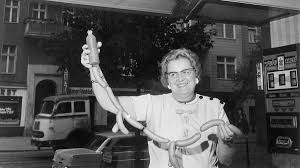
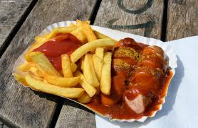
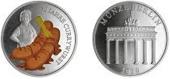
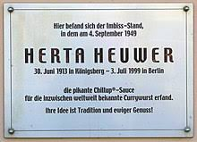

The German Chef who is loved by billions worldwide

Chef Herta Charlott Heuwer shows off her
world-famous Chillup sauce with a rope of wurst!
A timeline of Herta's invention:
Pre-1949: Herta Heuwer, a cook and saleswoman, worked at KaDeWe,
the largest department store in Charlottenburg, and later lived in the British
sector of Berlin.
1949: Heuwer, while running her snack bar, experimented with a
sauce made from tomato paste, Worcestershire sauce, curry powder and other spices,
which she then poured over boiled, fried, or grilled pork sausage.

September, 1949: Heuwer started selling her "Spezial Curry Bratwurst"
from her stall in Charlottenburg. This is when this dish earned the appelation of Currywurst.
January, 1951: Heuwer registered a trademark for her sauce under the name "Chillup".
Mid-1950s: "Currywurst" became popular, especially with the local workforce.
1960: Konnopke's Imbiss (Fast Food Stand) in Berlin became the first
Imbiss to sell currywurst in East-Berlin.
1974: Heuwer's small restaurant closed.
June 2003: The day before what would have been her 90th birthday,
a commemorative plaque was unveiled by Charlottenburg Mayor Monika Thiemen
at the site where Herta Heuwer invented the currywurst.
June 2013: Google celebrated Heuwer's centenary of her birthday with a
Google Doodle.
January 2019: Berlin State Mint minted a commemorative medal to mark the
70th anniversary of the invention of the Currywurst, on which she is depicted
together with two currywursts.

The Herta Heuwer plaque, commemorating the inventor of the currywurst,
is located in Berlin-Charlottenburg:

"Here was the snack stand where Herta Heuwer
invented the savory Chillup sauce for the currywurst on September 4, 1949, which is now known
all over the world. Her idea is tradition and eternal delight".